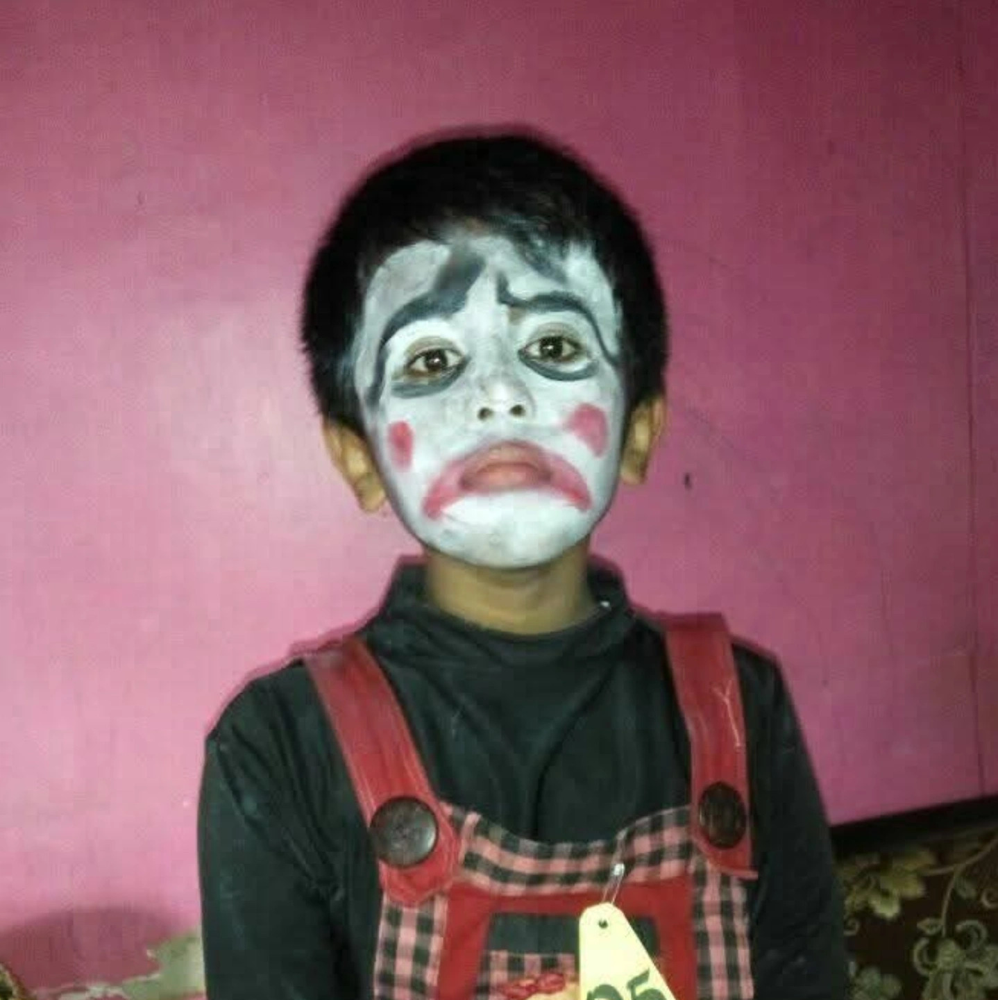

A
AYAH
Naser
Almarhum.
PERSONAL WEBSITE · 2026
Mahasiswa Sistem Informasi yang tertarik pada desain, teknologi, dan photography. Website ini menjadi tempat untuk mengenal profil saya sekaligus melihat dokumentasi kegiatan akademik.

01 / ABOUT ME
Sedikit cerita tentang siapa saya, apa yang saya pelajari, dan hal yang ingin saya kembangkan.
Everything around us is design. The way we see, understand, and interact with the world is shaped by it.
PERSONAL NOTE02 / MY ROOTS
Keluarga adalah bagian penting dari perjalanan hidup.
Almarhum.
Wiraswasta.
Mahasiswa.
03 / ACADEMIC ARCHIVE
Kumpulan berkas perkuliahan yang disusun berdasarkan kategori agar mudah ditemukan.
PRACTICAL WORK
Dokumentasi hasil praktikum, langkah kerja, dan pembahasan setiap modul.
COURSEWORK
Kumpulan tugas individu maupun kelompok dari setiap mata kuliah.
FINAL PROJECT
Arsip proyek akhir, dokumen perancangan, dan hasil pengembangan.
Tautan Google Drive di atas masih contoh. Ganti dengan tautan folder atau file milikmu.
04 / WEEKLY ROUTINE
Rangkuman jadwal perkuliahan mingguan.
| Hari | Waktu | Mata Kuliah | Dosen / Ruang |
|---|---|---|---|
| Senin | 13.00 – 14.35 | Riset Operasi (25-02) | Nita Mirantika, S.T., M.Pd. |
| Senin | 14.40 – 16.15 | Pemrograman Dasar (25-02) | Aji Permana, S.Kom., M.Kom. |
| Selasa | 08.00 – 09.35 | Analisis dan Perancangan Sistem Informasi (25-02) | Erik Kurniadi, S.Kom., M.Kom. |
| Selasa | 09.40 – 11.15 | Statistika Data (25-02) | Arief Surya Lesmana, S.Stat., M.M. |
| Rabu | 13.00 – 14.35 | Kalkulus (25-02) | Azin Taufik, S.Pd., M.Pd. |
| Kamis | 08.00 – 09.35 | Web Desain (25-02) | Dede Irawan, M.Kom. |
| Kamis | 09.40 – 11.15 | English Communication for IT (25-02) | Roni Nursyamsu, S.Pd., M.Pd. |
| Jumat | 08.00 – 10.25 | Analisis Proses Bisnis (25-02) | Dyah Puteria Wati, M.Kom |
| Jumat | 15.30 – 17.05 | Arsitektur Komputer dan Sistem Operasi (25-02) | Ragel Trisudarmo, M.Kom. |
Jadwal di atas telah disesuaikan dengan data perkuliahan terbaru.
05 / GET IN TOUCH
Temukan saya melalui media sosial atau hubungi melalui email.